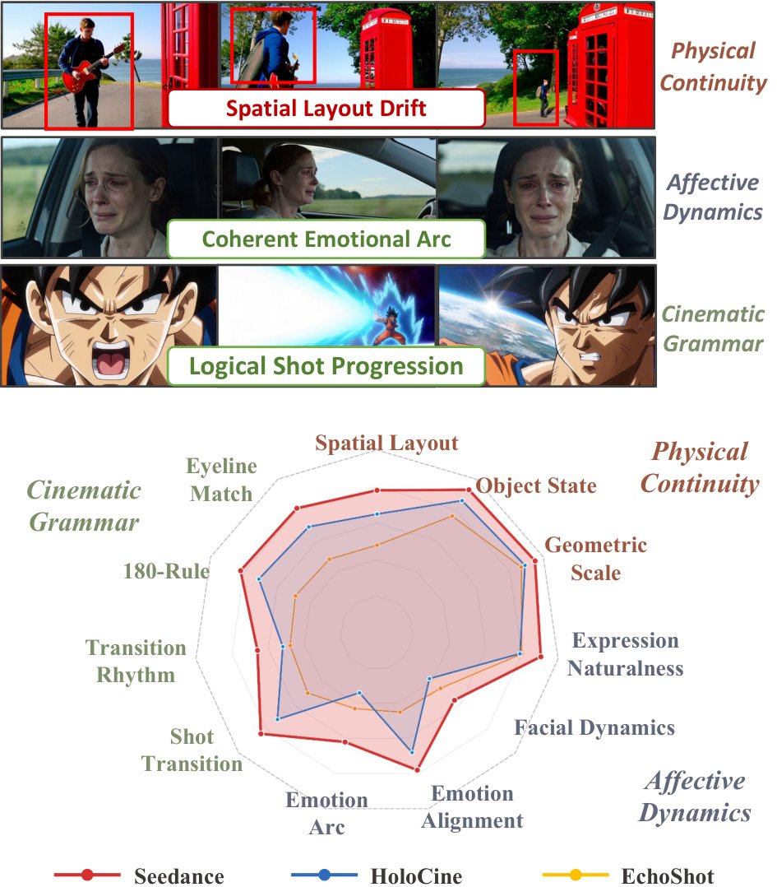
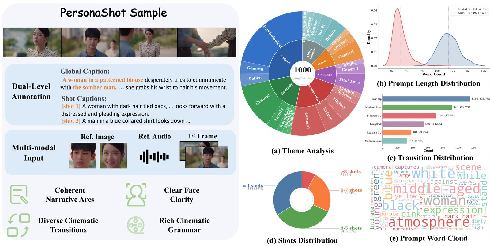
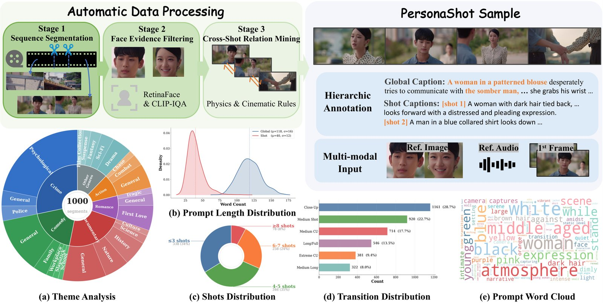
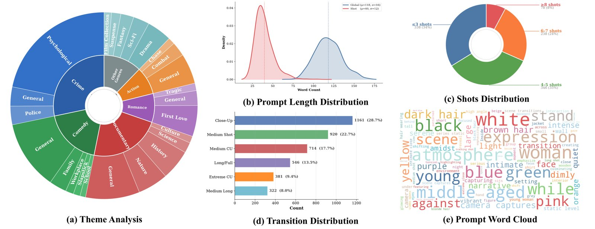
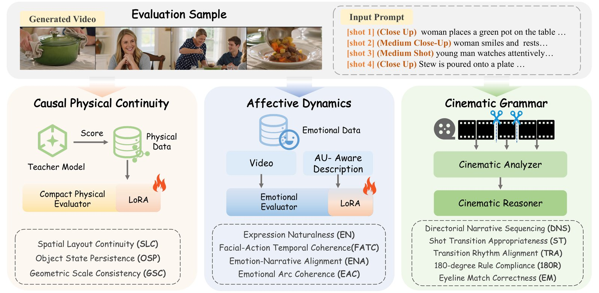
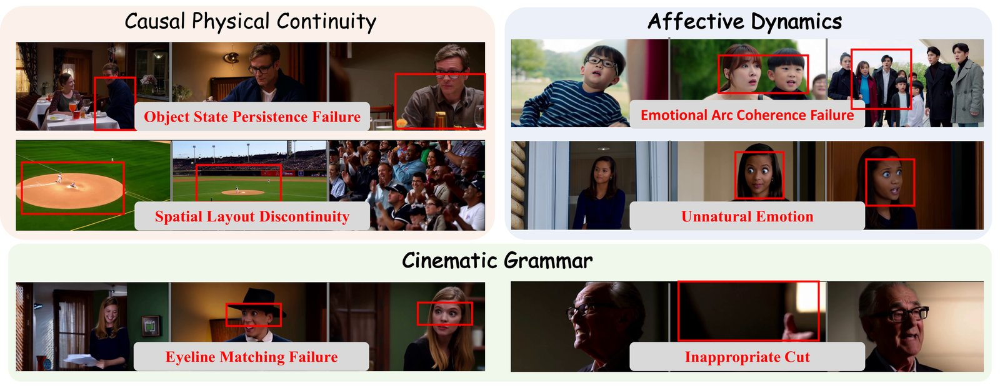
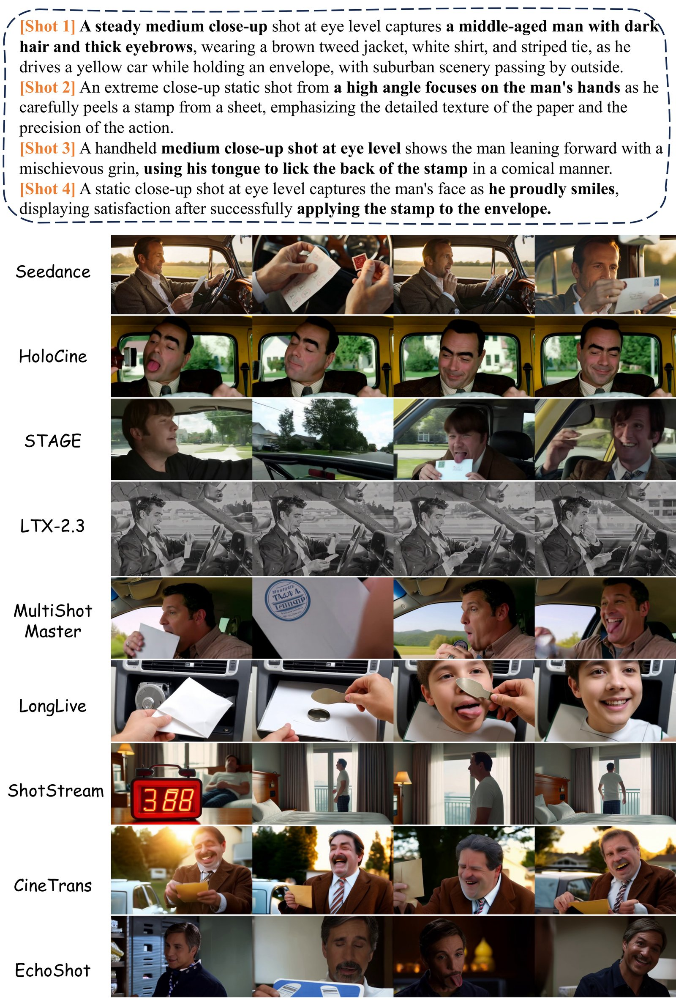
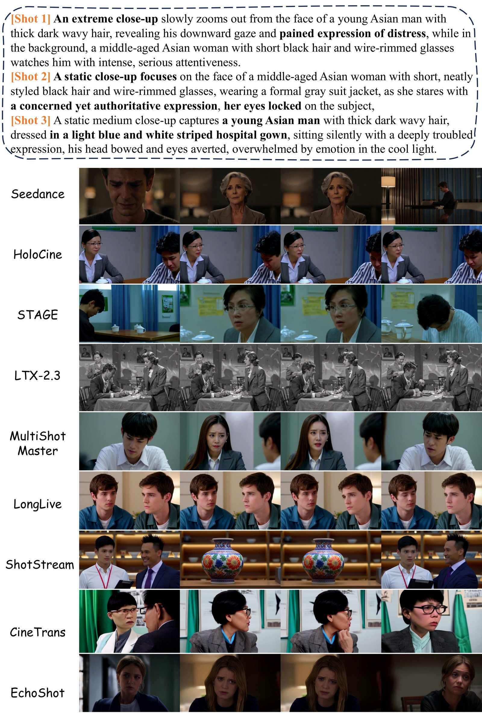

Benchmarking Person-Centric Narrative Continuity in Multi-Shot Video Generation
1Shanghai Jiao Tong University · 2Tencent Youtu Lab · 3Zhejiang University (∗ equal contribution, † corresponding)
Video generation is rapidly evolving from single-shot clips to multi-shot narratives, where the human character serves as the core narrative anchor. However, existing benchmarks mainly assess character appearance or individual-shot quality, without measuring whether physical and emotional states remain coherent across cuts.
We introduce PersonaShot, the first person-centric benchmark for narrative continuity in multi-shot video generation. PersonaShot contains approximately 1,000 multi-shot segments and 16 metrics spanning physical continuity, affective dynamics, and cinematic grammar. We distill reasoning from a large multimodal teacher (Qwen3.5-397B) into lightweight specialist evaluators (Qwen3.5-4B + LoRA), each grounded in the evidence required by its metric, and align them with expert human judgments.
Our evaluation reveals distinct capability profiles across state-of-the-art models and a clear gap between perceptual quality and cross-shot narrative continuity.
Spatial Layout, Object State Persistence, Geometric Scale — do character positions, held objects, and proportions remain causally consistent across editing cuts?
Expression Naturalness, Facial-Action Temporal Coherence, Emotion-Narrative Alignment, Emotional Arc — do affective states evolve coherently without abrupt resets?
Shot Transition, Transition Rhythm, 180° Rule, Eyeline Match, Directorial Narrative Sequencing — does the sequence follow film-language conventions?

Top: Qualitative examples illustrating three core dimensions. Bottom: Quantitative comparison revealing distinct capability profiles of state-of-the-art models.

PersonaShot adopts a video-first paradigm, sourcing from CineDance-1M and OpenHumanVid, processed through a rigorous three-stage pipeline.

Stage 1: Sequence Segmentation & Character Continuity (TransNetV2, 2–15 shots/segment). Stage 2: Face Visibility & Quality (RetinaFace + CLIP-IQA). Stage 3: Cross-Shot Relation Selection (Qwen-based multimodal reasoning).

Diverse narrative themes, sequence lengths, and framing scales for evaluating character continuity across actions, emotions, and interactions.

PersonaShot extends conventional quality assessment with three specialist dimensions. Lightweight evaluators (Qwen3.5-4B + LoRA) are distilled from Qwen3.5-397B via criterion-specific evidence.
Physical Continuity: Teacher-guided distillation with strict input isolation — annotations used during training but excluded at inference.
Affective Dynamics: Frame-level Action Unit signals from OpenFace enable AU-aware evaluation based on the Facial Action Coding System (FACS).
Cinematic Grammar: Two-stage pipeline: CineCap extracts professional film-language descriptions, then a reasoner evaluates via TransNetV2 shot boundaries.
Click any column header to sort. Bold = best, underlined = second best.
| Method | Aggregate | Visual Quality and Consistency | Causal Physical Continuity | Affective Dynamics | Cinematic Grammar | |||||||||||
|---|---|---|---|---|---|---|---|---|---|---|---|---|---|---|---|---|
| Method | Aggr. | VF | TVA | ID | SS | SLC | OSP | GSC | EN | FATC | ENA | EAC | ST | TRA | 180R | EM |
bold best · underline second. VF=Visual Fidelity, TVA=Text-Video Alignment, ID=Identity, SS=Scene/Style, SLC=Spatial Layout, OSP=Object State Persistence, GSC=Geometric Scale, EN=Expression Naturalness, FATC=Facial-Action Temporal Coherence, ENA=Emotion-Narrative Alignment, EAC=Emotional Arc, ST=Shot Transition, TRA=Transition Rhythm, 180R=180° Rule, EM=Eyeline Match.
ShotStream achieves highest visual fidelity (.994 VF) yet ranks 7th overall (.601) due to weak affective and cinematic performance.
Seedance leads overall (.793). Global-prompt systems remain competitive in cinematic grammar and identity.
Models struggle with object-state resets, unstable facial dynamics, and weak emotional trajectories across cuts.
Most systems fail at transition appropriateness, 180° rule compliance, and eyeline matching.
Seedance (0.865 DNS) vs. open-source LTX-2.3 (0.624) and VGoT (0.535) — long-form narrative planning remains a bottleneck.

Representative failures across three dimensions: object state resets, emotion inconsistencies, eyeline mismatches, and inappropriate transitions. Many failures are visually plausible per-shot but emerge across temporal and relational evaluation.
Setup: 10 domain experts, 25 multi-shot sequences, 4 annotators per sequence. Krippendorff’s α = 0.76. All correlations p < 0.01.
| Dim. | Criterion | Spearman ρ ↑ | Pair Acc. ↑ |
|---|---|---|---|
| Physical | Spatial Layout (SLC) | 0.68 | 71.4% |
| Object State (OSP) | 0.74 | 76.0% | |
| Geometric Scale (GSC) | 0.66 | 69.8% | |
| Affective | Expression Naturalness (EN) | 0.70 | 71.8% |
| Action Coherence (FATC) | 0.68 | 64.8% | |
| Narrative Alignment (ENA) | 0.71 | 72.5% | |
| Arc Coherence (EAC) | 0.67 | 68.2% | |
| Cinematic | Narrative Sequencing (DNS) | 0.74 | 74.0% |
| Shot Transition (ST) | 0.72 | 73.1% | |
| Rhythm Alignment (TRA) | 0.69 | 70.5% | |
| 180° Rule (180R) | 0.71 | 71.9% | |
| Eyeline Match (EM) | 0.65 | 67.2% |
All 12 specialist criteria evaluated against expert MOS. DNS (ρ=0.74) and OSP (ρ=0.74) show strongest human alignment.


PersonaShot is the first person-centric benchmark for narrative continuity in multi-shot video generation. Through 16 metrics and human-aligned specialist evaluators, it reveals that current generators remain limited in preserving persistent character states, modeling emotional evolution, and following cinematic conventions across shots. We hope PersonaShot serves as both a rigorous testbed and a catalyst for next-generation video foundation models with authentic storytelling capabilities.
@misc{personashot2026,
title = {PersonaShot: Benchmarking Person-Centric Narrative Continuity in Multi-Shot Video Generation},
author = {Wang, Yuji and Chen, Yuheng and Hu, Teng and Yi, Ran and Hong, Yijia and Feng, Han and Cao, Weijian and Wang, Chengjie and Ma, Lizhuang and Zhang, Jiangning},
year = {2026},
eprint = {arXiv:XXXX.XXXXX},
archivePrefix = {arXiv},
primaryClass = {cs.CV}
}